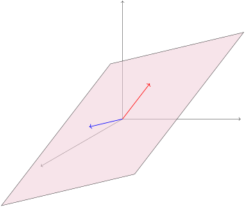
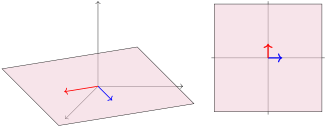

Determine if a subset of \(\IR^n\) is a subspace or not.
Subsection2.3.1Class Activities
Definition2.3.1.
A subset \(S\) of a vector space is called a subspace provided it is equal to the span of a set of vectors from that vector space.
Activity2.3.2.
Consider two non-colinear vectors in \(\IR^3\text{.}\) If we look at all linear combinations of those two vectors (that is, their span), we end up with a planar subspace within \(\IR^3\text{.}\) Call this plane \(S\text{.}\)

(a)
For any unspecified \(\vec{u}, \vec{v} \in S\text{,}\) is it the case that \(\vec{u} + \vec{v} \in S\text{?}\)
Yes.
No.
(b)
For any unspecified \(\vec{u} \in S\) and \(c\in\IR\text{,}\) is it the case that \(\vec{u}+\left[\begin{array}{c} c \\ c \\ c \end{array}\right] \in S\text{?}\)
Yes.
No.
(c)
For any unspecified \(\vec{u} \in S\) and \(c\in\IR\text{,}\) is it the case that \(c\vec{u} \in S\text{?}\)
Yes.
No.
Fact2.3.3.
A subset\(S\) of a vector space is a subspace provided:
the subset is closed under addition: for any \(\vec{u},\vec{v} \in S\text{,}\) the sum \(\vec{u}+\vec{v}\) is also in \(S\text{.}\)
the subset is closed under scalar multiplication: for any \(\vec{u} \in S\) and scalar \(c \in \IR\text{,}\) the product \(c\vec{u}\) is also in \(S\text{.}\)
Observation2.3.4.
Note the similarities between a planar subspace spanned by two non-colinear vectors in \(\IR^3\text{,}\) and the Euclidean plane \(\IR^2\text{.}\) While they are not the same thing (and shouldn’t be referred to interchangably), algebraists call such similar vector spaces isomorphic; we’ll learn what this means more carefully in a later chapter.

A planar subset of \(\IR^3\) compared with the plane \(\IR^2\text{.}\)
Figure11.A planar subset of \(\IR^3\) compared with the plane \(\IR^2\text{.}\)
Activity2.3.5.
Let \(S=\setBuilder{\left[\begin{array}{c} x \\ y \\ z \end{array}\right]}{ x+2y+z=0}\text{.}\)
(a)
Let’s assume that \(\vec{v}=\left[\begin{array}{c} x \\ y \\ z \end{array}\right]\) and \(\vec{w} = \left[\begin{array}{c} a \\ b \\ c \end{array}\right] \) are in \(S\text{.}\) What are we allowed to assume?
\(x+2y+z=0\text{.}\)
\(a+2b+c=0\text{.}\)
Both of these.
Neither of these.
(b)
Which equation must be verified to show that \(\vec v+\vec w = \left[\begin{array}{c} x+a \\ y+b \\ z+c \end{array}\right]\) also belongs to \(S\text{?}\)
\((x+a)+2(y+b)+(z+c)=0\text{.}\)
\(x+a+2y+b+z+c=0\text{.}\)
\(x+2y+z=a+2b+c\text{.}\)
(c)
Use the assumptions from (a) to verify the equation from (b).
(d)
Is \(S\) is a subspace of \(\IR^3\text{?}\)
Yes
No
Not enough information
(e)
Show that \(k\vec v=\left[\begin{array}{c}kx\\ky\\kz\end{array}\right]\) also belongs to \(S\) for any \(k\in\IR\) by verifying \((kx)+2(ky)+(kz)=0\) under these assumptions.
(f)
Is \(S\) is a subspace of \(\IR^3\text{?}\)
Yes
No
Not enough information
Activity2.3.6.
Let \(S=\setBuilder{\left[\begin{array}{c} x \\ y \\ z \end{array}\right]}{ x+2y+z=4}\text{.}\)
(a)
Which of these statements is valid?
\(\left[\begin{array}{c} 1 \\ 1 \\ 1 \end{array}\right]\in S\text{,}\)and\(\left[\begin{array}{c} 2 \\ 2 \\ 2 \end{array}\right]\in S\text{,}\) so \(S\)is a subspace.
\(\left[\begin{array}{c} 1 \\ 1 \\ 1 \end{array}\right]\in S\text{,}\)and\(\left[\begin{array}{c} 2 \\ 2 \\ 2 \end{array}\right]\in S\text{,}\) so \(S\)is not a subspace.
\(\left[\begin{array}{c} 1 \\ 1 \\ 1 \end{array}\right]\in S\text{,}\)but\(\left[\begin{array}{c} 2 \\ 2 \\ 2 \end{array}\right]\not\in S\text{,}\) so \(S\)is a subspace.
\(\left[\begin{array}{c} 1 \\ 1 \\ 1 \end{array}\right]\in S\text{,}\)but\(\left[\begin{array}{c} 2 \\ 2 \\ 2 \end{array}\right]\not\in S\text{,}\) so \(S\)is not a subspace.
(b)
Which of these statements is valid?
\(\left[\begin{array}{c} 1 \\ 1 \\ 1 \end{array}\right]\in S\text{,}\)and\(\left[\begin{array}{c} 0 \\ 0 \\ 0 \end{array}\right]\in S\text{,}\) so \(S\)is a subspace.
\(\left[\begin{array}{c} 1 \\ 1 \\ 1 \end{array}\right]\in S\text{,}\)and\(\left[\begin{array}{c} 0 \\ 0 \\ 0 \end{array}\right]\in S\text{,}\) so \(S\)is not a subspace.
\(\left[\begin{array}{c} 1 \\ 1 \\ 1 \end{array}\right]\in S\text{,}\)but\(\left[\begin{array}{c} 0 \\ 0 \\ 0 \end{array}\right]\not\in S\text{,}\) so \(S\)is a subspace.
\(\left[\begin{array}{c} 1 \\ 1 \\ 1 \end{array}\right]\in S\text{,}\)but\(\left[\begin{array}{c} 0 \\ 0 \\ 0 \end{array}\right]\not\in S\text{,}\) so \(S\)is not a subspace.
Remark2.3.7.
In summary, any one of the following is enough to prove that a nonempty subset \(W\) is not a subspace:
Find specific values for \(\vec u,\vec v\in W\) such that \(\vec u+\vec v\not\in W\text{.}\)
Find specific values for \(c\in\IR,\vec v\in W\) such that \(c\vec v\not\in W\text{.}\)
Show that \(\vec 0\not\in W\text{.}\)
If you cannot do any of these, then \(W\) can be proven to be a subspace by doing both of the following:
For all \(\vec v,\vec w\in W\) (not just specific values), \(\vec u+\vec v\in W\text{.}\)
For all \(\vec v\in W\) and \(c\in \IR\) (not just specific values), \(c\vec v\in W\text{.}\)
Show \(R\) isn’t a subspace by showing that \(\vec 0\not\in R\text{.}\)
(b)
Show \(S\) isn’t a subspace by finding two vectors \(\vec u,\vec v\in S\) such that \(\vec u+\vec v\not\in S\text{.}\)
(c)
Show \(T\) isn’t a subspace by finding a vector \(\vec v\in T\) such that \(2\vec v\not\in T\text{.}\)
Activity2.3.9.
Consider the following two sets of Euclidean vectors:
\begin{equation*}
U=\left\{ \left[\begin{array}{c} x \\ y \end{array}\right] \middle|\,7 \, x + 4 \, y = 0\right\} \hspace{2em} W=\left\{ \left[\begin{array}{c} x \\ y \end{array}\right] \middle|\,3 \, x y^{2} = 0\right\}
\end{equation*}
Explain why one of these sets is a subspace of \(\mathbb{R}^2\) and one is not.
Activity2.3.10.
Consider the following attempted proof that
\begin{equation*}
U=\left\{ \left[\begin{array}{c} x \\ y \end{array}\right] \middle| x+y=xy\right\}
\end{equation*}
is closed under scalar multiplication.
Let \(\left[\begin{array}{c} x \\ y \end{array}\right]\in U\text{,}\) so we know that \(x+y=xy\text{.}\) We want to show \(k\left[\begin{array}{c} x \\ y \end{array}\right]=\left[\begin{array}{c} kx \\ ky \end{array}\right]\in U\text{,}\) that is, \((kx)+(ky)=(kx)(ky)\text{.}\) This is verified by the following calculation:
Basically, you cannot prove something is true by assuming it’s true, and it’s not helpful to prove to someone that zero equals itself (they probably already know that).
Subsection2.3.2Videos
Figure12.Video: Showing that a subset of a vector space is a subspaceFigure13.Video: Showing that a subset of a vector space is not a subspace
A square matrix \(M\) is symmetric if, for each index \(i,j\text{,}\) the entries \(m_{ij} = m_{ji}\text{.}\) That is, the matrix is itself when reflected over the diagonal from upper left to lower right. Prove that the set of \(n \times n\) symmetric matrices is a subspace of \(M_{n \times n}\text{.}\)
Exploration2.3.14.
The space of all real-valued function of one real variable is a vector space. First, define \(\oplus\) and \(\odot\) for this vector space. Check that you have closure (both kinds!) and show what the zero vector is under your chosen addition. Decide if each of the following is a subspace. If so, prove it. If not, provide the counterexample.
The set of even functions, \(\{f:\mathbb{R} \rightarrow \mathbb{R}: f(-x) = f(x) \mbox{ for all } x\}\text{.}\)
The set of odd functions, \(\{f:\mathbb{R} \rightarrow \mathbb{R}: f(-x) = -f(x) \mbox{ for all } x\}\text{.}\)
Exploration2.3.15.
Give an example of each of these, or explain why it’s not possible that such a thing would exist.
A nonempty subset of \(M_{2 \times 2}\) that is not a subspace.
A set of two vectors in \(\mathbb{R}^2\) that is not a spanning set.
Exploration2.3.16.
Let \(V\) be a vector space and \(S = \{\vec{v}_1,\vec{v}_2,\ldots,\vec{v}_n\}\) a subset of \(V\text{.}\) Show that the span of \(S\) is a subspace. Is it possible that there is a subset of \(V\) containing fewer vectors than \(S\text{,}\) but whose span contains all of the vectors in the span of \(S\text{?}\)